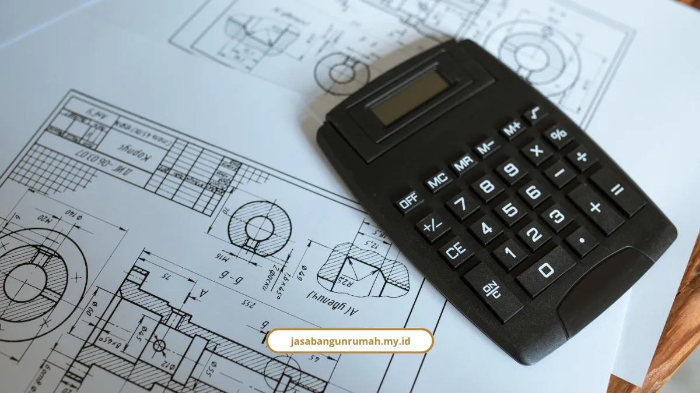

Daftar Isi
- Berapa biaya kontraktor ruko per meter?
- Berapa RAB ruko 2 lantai ukuran 5 x 15 m?
- Ke mana saja uang RAB ruko dialokasikan?
- Rangka beton atau baja, mana lebih murah?
- Biaya apa yang sering terlupa?
- Seperti apa contoh layout ruko 3 lantai?
- Kalau proyek terlambat, tambah tenaga kerja atau lembur?
- Apa yang kami tawarkan untuk proyek ruko?
- FAQ
Biaya kontraktor ruko Melayani Makassar berkisar Rp3 juta hingga Rp6 juta lebih per m². Ruko 2 lantai 150 m² kelas menengah sekitar Rp675 juta.
Kami sajikan tabel harga, simulasi RAB, perbandingan beton dan baja, sampai biaya yang sering terlupa.
Berapa biaya kontraktor ruko per meter?
Biaya konstruksi fisik ruko baru berkisar Rp3.000.000 sampai Rp6.000.000+ per m², tergantung spesifikasi dan lokasi.
| Kelas | Biaya per m² |
|---|---|
| Standar | Rp3.000.000 sampai Rp3.500.000 |
| Menengah | Rp4.000.000 sampai Rp4.500.000 |
| Premium / lokasi padat komersial | Rp5.000.000 sampai Rp6.000.000+ |
Pemerintah Kota Makassar punya acuan resmi. Berdasarkan Keputusan Wali Kota Makassar Moh. Ramdhan Pomanto, Standar Harga Satuan Tertinggi (SHST) untuk gedung sederhana ditetapkan Rp5.690.000 per m² dengan Indeks Lokalitas 0,5%.
Angka ini patokan batas tertinggi pemerintah, bukan tarif yang otomatis berlaku untuk proyek swasta.
Berapa RAB ruko 2 lantai ukuran 5 x 15 m?
RAB ruko 2 lantai ukuran 5 x 15 m (luas total 150 m²) berkisar Rp525 juta sampai Rp900 juta, tergantung kelas.
- Standar (Rp3.500.000 per m²): Rp525.000.000
- Menengah (Rp4.500.000 per m²): Rp675.000.000
- Premium (Rp6.000.000 per m²): Rp900.000.000
Untuk ruko 2 lantai ukuran 4,5 x 15 m (135 m²) kelas menengah, biayanya Rp607.500.000. Semua angka tersebut simulasi, bukan penawaran. RAB kustom dihitung setelah gambar dan spesifikasi jelas.
Ke mana saja uang RAB ruko dialokasikan?
Fondasi dan struktur utama menyedot porsi terbesar, 30% sampai 40% dari RAB. Untuk ruko kelas menengah Rp675 juta, porsi ini setara Rp202,5 juta sampai Rp270 juta.

Proporsi lengkapnya:
- Fondasi dan struktur utama: 30% sampai 40%
- Dinding, atap, dan pekerjaan arsitektur: 20% sampai 30%
- Finishing (lantai, cat, plafon): 15% sampai 25%
- Instalasi listrik, air, dan sanitasi (MEP): 10% sampai 15%
- Persiapan dan pekerjaan awal: 3% sampai 5%
- Dana cadangan (contingency): 10% sampai 15%
Dana cadangan sering dianggap boros, padahal justru penyelamat. Untuk RAB Rp675 juta, cadangan 10% sampai 15% berarti Rp67,5 juta sampai Rp101,25 juta untuk perubahan di lapangan.
Rangka beton atau baja, mana lebih murah?
Rangka beton bertulang lebih murah, rangka baja profil (IWF/WF) lebih cepat. Data ini dari studi jurnal ilmiah INOMATEC (2025) untuk gedung 3 lantai.
| Parameter | Rangka Beton Bertulang | Rangka Baja Profil (IWF/WF) |
|---|---|---|
| Estimasi biaya | Rp1.355.572.919,07 | Rp1.924.251.134,72 |
| Durasi pengerjaan | 435 hari | 397 hari |
| Keunggulan utama | Lebih hemat sekitar Rp568,7 juta | Lebih cepat 38 hari |
| Karakter material | Kaku, berat, sangat tahan api dan angin | Sangat daktail, menyerap energi gempa dinamis dengan baik |
Prof. Widodo dalam bukunya Analisis Tegangan Regangan menyebut balok beton punya sifat struktur menerus yang berfungsi utama menyalurkan gaya momen lentur dan gaya geser menuju kolom.
Kekurangan yang jujur perlu disebut: penelitian ini untuk gedung 3 lantai, bukan khusus ruko. Riset tersebut memakai acuan upah harian berikut:
- Pekerja: Rp102.000
- Tukang besi, kayu, atau las: Rp140.200
- Kepala tukang: Rp175.000
- Mandor: Rp150.000
Biaya apa yang sering terlupa?
Biaya di luar konstruksi fisik sering jadi kejutan pemilik ruko. Semuanya perlu masuk anggaran sejak awal.
- Izin PBG melalui SIMBG yang diverifikasi Dinas PUPR atau DPMPTSP Kota Makassar
- Sertifikat Laik Fungsi (SLF) untuk kelayakan operasional bangunan komersial
- Pasang baru atau tambah daya listrik PLN, plus jaringan air bersih atau sumur bor
- Interior, signage atau neon box toko, dan penyediaan area parkir
Untuk peremajaan ruko lama, biaya renovasi per m² sebagai berikut:
- Renovasi ringan (pengecatan, keramik sebagian, cat plafon): Rp500.000 sampai Rp1.500.000
- Renovasi sedang (perbaikan MEP total, ganti lantai dan plafon, partisi): Rp1.500.000 sampai Rp3.000.000
- Renovasi besar (ubah struktur, tambah lantai atau mezzanine): Rp3.000.000 sampai Rp5.000.000+
Harga satuan item terpisah:
- Partisi gypsum: Rp200.000 sampai Rp400.000 per m²
- Partisi kaca aluminium fasad: Rp500.000 sampai Rp1.200.000 per m²
- Instalasi titik listrik: Rp150.000 sampai Rp300.000 per titik
Seperti apa contoh layout ruko 3 lantai?
Sebagai inspirasi desain, ruko modern 3 lantai untuk klien Bapak Junaedi memakai lahan 17,7 x 19 meter untuk 3 unit ruko.
- Lantai dasar: parkir dan area usaha sembako (4 x 12 m)
- Lantai 1: area fashion atau busana
- Lantai 2: area bersantai atau kantor
- Fasad: atap spandek pelana miring dan panel GRC motif serat kayu yang ringan, tahan api, dan tahan cuaca humid
- Frame pintu dan jendela: aluminium atau UPVC bebas rayap
Kalau proyek terlambat, tambah tenaga kerja atau lembur?
Menambah tenaga kerja lebih efektif. Penelitian PNUP Repository pada pembangunan Ruko C-Walk Citraland City CPI Makassar mencatat penambahan tenaga kerja mempercepat hingga 27 hari, sedangkan lembur hanya 10 hari.
Data ini penting karena keterlambatan bisa berujung denda.
Apa yang kami tawarkan untuk proyek ruko?
Kami menawarkan RAB transparan sejak awal, garansi struktur, dan pengerjaan ruko 2 sampai 3 lantai dalam 4 sampai 6 bulan. Jasa Bangun Rumah adalah studio design and build dengan pengalaman lebih dari 15 tahun, 250+ proyek selesai, dan tingkat kepuasan klien 98%.
Alur kerjanya empat tahap:
- Konsultasi dan survei lokasi, plus RAB transparan gratis
- Desain dan penandatanganan kontrak dengan DED lengkap
- Pelaksanaan konstruksi dengan pengawasan mutu, standar material SNI, dan laporan progres tertulis atau foto
- Serah terima kunci dan garansi struktur
Pembayaran berbasis termin sesuai progres fisik. Ulasan Siti Aminah, pemilik ruko: "Kami sangat terbantu dengan RAB yang transparan sejak awal, tidak ada biaya tak terduga. Renovasi ruko kami selesai lebih cepat dari jadwal."
Kalau bangunan yang direncanakan lebih besar dari ruko, cakupannya ada di layanan kontraktor bangunan komersial yang kami jalankan.
Patokan biaya kontraktor ruko Rp3 juta sampai Rp6 juta lebih per m², dengan dana cadangan 10% sampai 15% dan biaya PBG, SLF, serta utilitas yang harus disiapkan terpisah. Beton lebih hemat, baja lebih cepat.
Kami Melayani Makassar untuk pembangunan dan renovasi ruko. Konsultasi gratis, dan RAB kustom bisa dihitung lewat WhatsApp. Pesan sekarang:
- Jasa kontraktor bangunan untuk ruko baru
- Jasa renovasi bangunan gedung untuk ruko lama
- Jasa arsitek dan jasa desain interior untuk gambar kerja dan tata ruang usaha dan layanan lainnya